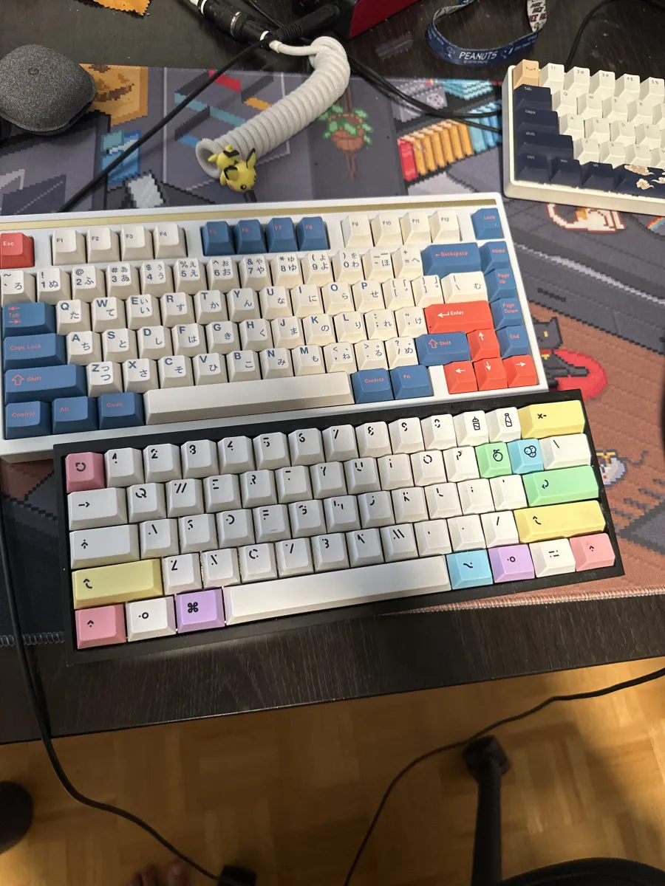
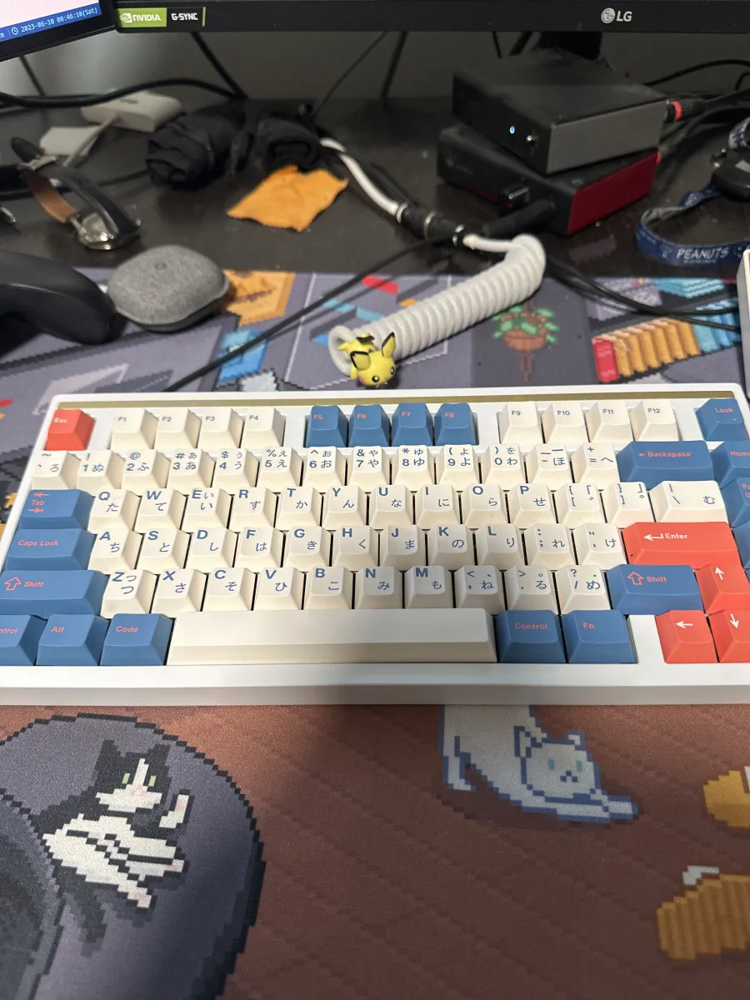

Building a Mechanical Keyboard
Covid pushed me into this. Lockdowns in 2019–2020 meant more time at a desk, and the keyboard that came with the setup stopped being something I could ignore. I started looking into custom builds, fell into the usual rabbit hole of forums and group buys, and ended up building two keyboards in total.
Build 1 (2019): KBDFANS TOFU 60%
The centerpiece is the KBDFANS TOFU 60% Aluminum Case in black. It's heavy, solid, and much more satisfying to type on than any plastic shell. Paired with it is the DZ60RGB-ANSI V2 Hot Swap PCB, which lets you swap switches without soldering anything to the board itself. The switches are Gazzew Boba U4T, a tactile switch with a rounded bump and a deep thocky sound that works well in an aluminum case. I added DZ60 case foam to cut down on the hollow ping you get from an aluminum case, and lubed the switches with Tribosys 3203 from Aliexpress, which takes the edge off the scratchiness without flattening the tactile feel. The springs got a separate treatment with dielectric grease to kill the spring ping, which is that metallic twang you hear when a switch bottoms out. The cable is a StayWired white with a black aviator connector. I also added Route package protection to the order because shipping keyboard parts internationally felt like a gamble I didn't want to lose.
The finished board ended up with a pastel rainbow keycap set that made the whole thing look more playful than I originally planned. The foam and lubed switches made it noticeably quieter than I expected, and the aluminum case added a weight that made cheap keyboards feel hollow by comparison.

Build 2 (2020): Mode Sonnet
After finishing the TOFU I had a better sense of what I actually wanted. The 60% layout worked fine but I missed having function keys and a navigation cluster within reach. That pulled me toward a 75%, and after some research I landed on the Mode Sonnet.
Mode Designs builds keyboards that sit closer to the furniture end of the spectrum than the peripheral end. The Sonnet is a 75% in a white aluminum case with a clean, minimal silhouette. Where the TOFU feels like a tool, the Sonnet feels more considered. The switches are Holy Pandas, a tactile switch with one of the sharpest, most pronounced bumps available. They take more work to set up than most switches, but the payoff in feel is noticeable every time you type on them. I paired it with GMK CYL Bento R2, a set inspired by the Japanese bento box. The colorway is a tealish blue with cream alphas and salmon accent keys, and the keycaps carry both hiragana and katakana sub-legends. It's a set that rewards looking closely.

Unlike the TOFU, the Sonnet required actual soldering. That meant picking up proper tools and learning how to use them before the switches and stabilizers could be modded and installed.
Learning to Solder
I picked up the X-Tronic Model #3020-XTS Digital Display Soldering Iron Station and the Engineer SS-01 solder sucker before touching the Sonnet. Before any real work on the board I spent time on a practice PCB running through joints until the process felt natural. That practice time was where most of the actual learning happened.
Temperature was the first thing to get wrong. Running the iron too hot burns the flux out of the solder before it flows properly and can lift pads off the board if you linger. Too cool and the joint looks dull and grainy instead of smooth. Finding the right range for the solder I was using took a few sessions of adjusting and watching what happened at the joint. The digital display on the X-Tronic made that a lot easier since you can actually dial in a specific number and hold it there rather than guessing from a knob position.
Tip care was another thing nobody tells you upfront. If you let the iron sit hot without tinning the tip, it oxidizes and stops transferring heat properly. The fix is to wipe it on the brass cleaner and apply fresh solder, but if you let it go too far the tip gets pitted and warped and won't recover. I learned to tin the tip any time I set the iron down for more than a minute and to wipe before and after every joint. It sounds fussy but it becomes automatic quickly.
Solder quantity was something I had to calibrate by feel. Too little and the joint is weak with the switch pin barely wetted. Too much and you get a blob that bridges across neighboring pads. The right amount fills the ring around the pin cleanly and forms a small cone shape. Once you see a good joint a few times you start to recognize what you're aiming for.
The Engineer SS-01 earned its place when I had to pull a few switches to reposition them. The timing is the whole trick: heat the joint fully, pull the iron, trigger the pump almost immediately. If you wait too long the solder skins over and the pump barely pulls anything. Get it right and the pad clears cleanly in one shot. The SS-01 is small and Japanese-made and more reliable than the cheaper spring-loaded suckers, which tend to lose suction or feel sloppy after a few uses.
The honest summary is that soldering is a skill that responds directly to the time you put into it. The tools help, but what actually made a difference was putting in the practice reps before touching anything I cared about. The Sonnet build went smoothly because of the time spent on the test board, not because the iron was fancy.
Modding Switches
Every switch gets taken apart, lubed, and reassembled before it goes into a build. The process is the same whether you're working with Boba U4Ts or Holy Pandas: open the switch, lube the housing and stem, treat the spring separately, close it back up. Do that across a full set of switches and you start to understand why people call it meditative.
The housing and stem get Tribosys 3203 from Aliexpress. It's a thin lube that reduces the scratchiness you feel as the stem travels through the housing without killing the tactile bump. With tactile switches you want to avoid getting lube on the legs of the stem, since that's where the bump comes from. Too much lube there and the switch starts to feel closer to a linear.
The springs are done separately with dielectric grease. The goal is to stop spring ping, which is a metallic twang that happens when the spring compresses and vibrates against the housing. The easiest method is bag lubing: put the springs in a small bag with a small amount of grease, shake until they're coated, then spread them out and let any excess settle before reassembling. It takes less than a minute per batch and the difference in sound is immediate.
Holy Pandas have a reputation for being harder to lube correctly because the tactile bump is so pronounced that any lube on the stem legs noticeably dulls it. The approach is to lube only the inside of the housing and the bottom of the stem, and leave the legs completely dry. Getting it right takes a few switches to dial in but the result is a switch that feels sharp and smooth at the same time.
Modding Stabilizers
Stabilizers support the larger keys like spacebar, shift, enter, and backspace. Out of the box they rattle, feel scratchy on the wire, and bottom out with a harsh plastic thud. Fixing that is a separate process from the switches and covers a few different mods.
The first step is clipping. The stabilizer stems have two small legs on the bottom that create a secondary contact point when the key bottoms out. Clipping those off removes a source of noise and makes the keystroke feel more consistent. It's a one-way mod, but there's no reason not to do it.
After clipping, the wire and the inside of the housing get lubed with dielectric grease. The wire is what causes most stabilizer rattle since it slaps around inside the housing on each keystroke. A thin coat of grease on the wire and on the contact points inside the housing quiets that down considerably.
The band-aid mod adds a small piece of cloth band-aid to the PCB under each stabilizer mount point. When the stabilizer bottoms out it hits the band-aid instead of bare PCB, which softens the sound. I tried it on both builds and it makes a noticeable difference on the spacebar in particular, which takes more force and bottoms out harder than the other keys. The mod takes about five minutes and costs nothing if you already have band-aids.